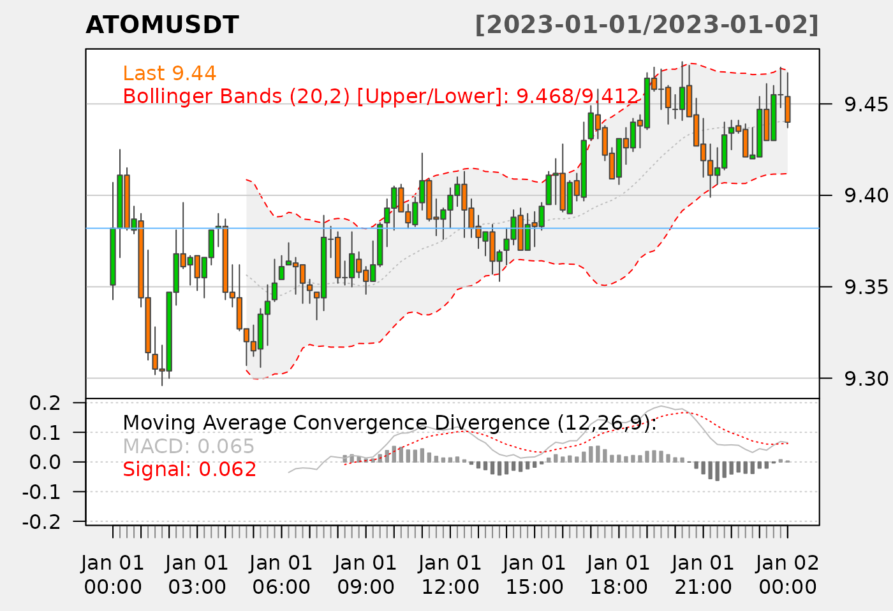

Cryptocurrency Market Data with Quantmod and TTR
Source:vignettes/articles/05-quantmod.Rmd
05-quantmod.RmdcryptoQuotes were built to be interoperable with the
powerful packages quantmod and TTR. Here we
use an example with ATOMUSDT,
## load USDT denominated ATOM
## with hourly intervals
## for September
ATOMUSDT <- cryptoQuotes::getQuote(
ticker = 'ATOMUSDT',
source = 'binance',
futures = TRUE,
interval = '15m',
from = '2023-01-01',
to = '2023-01-02'
)Cryptocurrency and Quantmod
Charting Cryptocurrency with Quantmod
The ATOMUSDT can be passed directly into the
quantmod::chartSeries()-function with, if desired, the
relevant technical indicators. Pass quantmod::addBBands()
and quantmod::addMACD into the TA-argument, to
add Bollinger Bands and Moving Average Convergence Divergence (MACD)
indicators,
## chart the spotAtom
## with a candlestick
## chart with Bollinger Bands
## and MACD indicators
quantmod::chartSeries(
x = ATOMUSDT,
theme = quantmod::chartTheme("white"),
TA = c(
# Add Bollinger Bands
quantmod::addBBands(),
# Add MACD
quantmod::addMACD()
)
) 
Locating Peaks with Quantmod
# 1) find peaks
# using a small threshold;
peak_idx <- min(
quantmod::findPeaks(
ATOMUSDT$Close,
thresh = 0.022
)
)
# 2) add to main to main
# chart
quantmod::addLines(
h = ATOMUSDT[peak_idx]$Close,
overlay = TRUE,
col = 'steelblue1'
)
NOTE: quantmod only supports daily interals and, therefore, functions like
allReturns()needs to be modified.
Cryptocurrency and TTR
For Artificial Intelligence applications, like price prediction,
where the numeric value of the indicators are needed, the
indicators from TTR can be calculated and added to the
returned data from the cryptoQuotes::getQuote()-function.
TTR::BBands() is one of such indicators that some traders
use as buy and sell signals, these can be added the following way,
# 1) calculate
# Bollinger Bands
indicator <- TTR::BBands(
quantmod::HLC(ATOMUSDT)
)
# 2) add to the
# cryptocurrency quote
ATOMUSDT <- cbind(
ATOMUSDT,
indicator
)
# 3) calculate
# the distance of the
# closing Price and upper band
ATOMUSDT$distance <- (ATOMUSDT$up - ATOMUSDT$Close)^2The resulting indicator can be fit using, for example, the
lm()-function to determine how the distance affects the
next closing price.
# 1) fit a simple
# model using the distance
# to the upper band and
# lagged closing price
# as predictors
summary(
lm(
ATOMUSDT$Close ~ xts::lag.xts(ATOMUSDT$Close) + xts::lag.xts(ATOMUSDT$distance)
)
)
#>
#> Call:
#> lm(formula = ATOMUSDT$Close ~ xts::lag.xts(ATOMUSDT$Close) +
#> xts::lag.xts(ATOMUSDT$distance))
#>
#> Residuals:
#> Min 1Q Median 3Q Max
#> -0.0230962 -0.0094336 -0.0004082 0.0085242 0.0293977
#>
#> Coefficients:
#> Estimate Std. Error t value Pr(>|t|)
#> (Intercept) 0.62168 0.43153 1.441 0.154
#> xts::lag.xts(ATOMUSDT$Close) 0.93390 0.04586 20.366 <2e-16 ***
#> xts::lag.xts(ATOMUSDT$distance) 1.07858 1.13709 0.949 0.346
#> ---
#> Signif. codes: 0 '***' 0.001 '**' 0.01 '*' 0.05 '.' 0.1 ' ' 1
#>
#> Residual standard error: 0.0127 on 74 degrees of freedom
#> (20 observations deleted due to missingness)
#> Multiple R-squared: 0.875, Adjusted R-squared: 0.8716
#> F-statistic: 258.9 on 2 and 74 DF, p-value: < 2.2e-16NOTE: In case you werent awar:, this is not financial advise. Its merely a simple demonstration of the available applications.